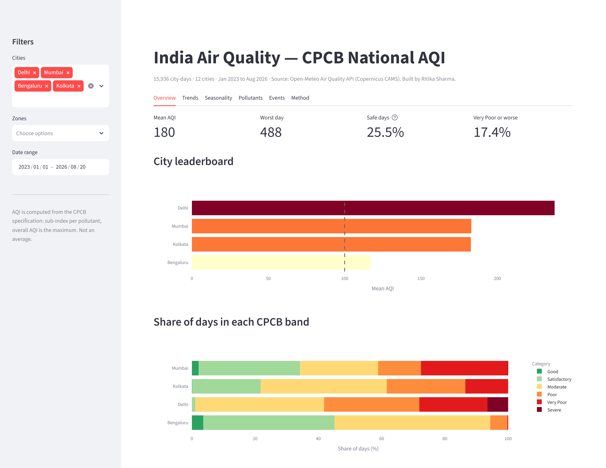
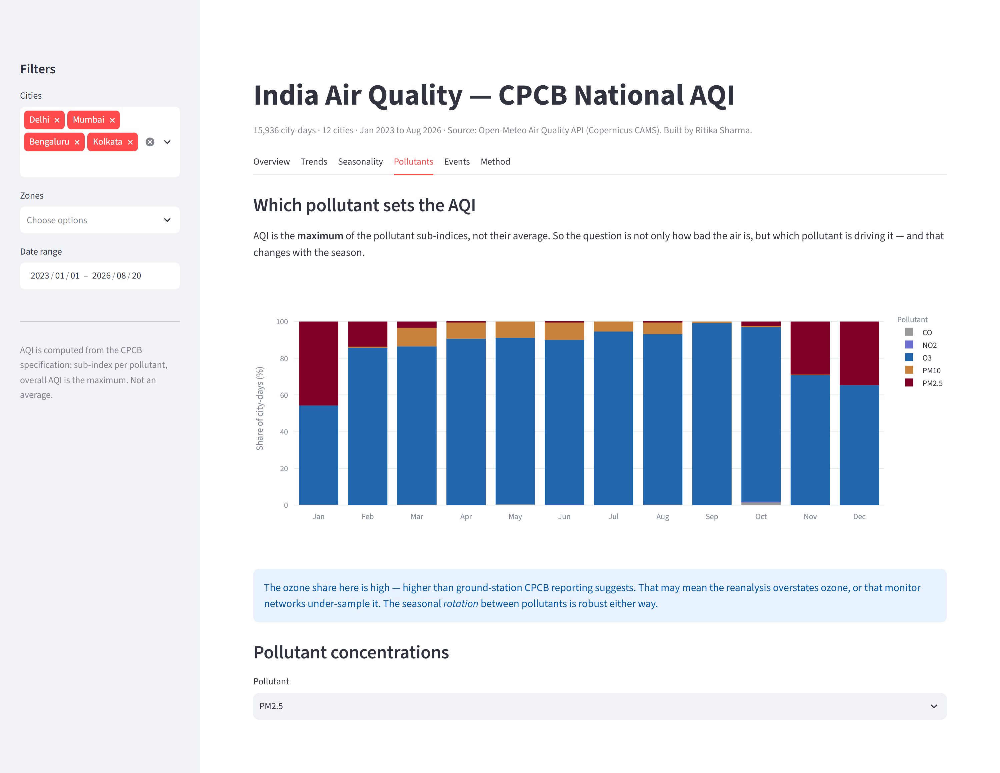
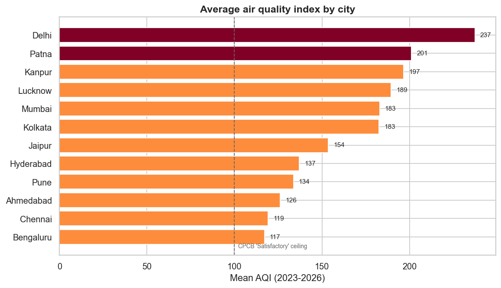
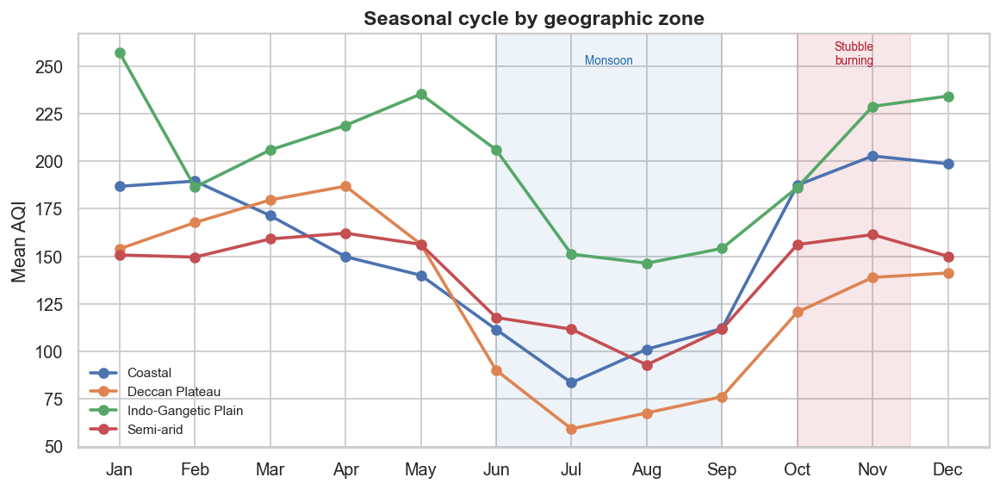
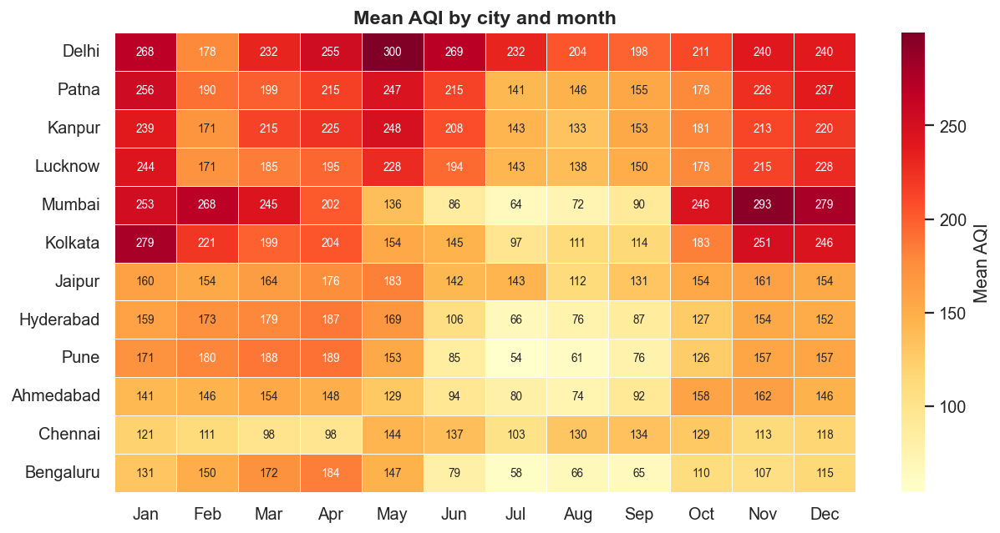
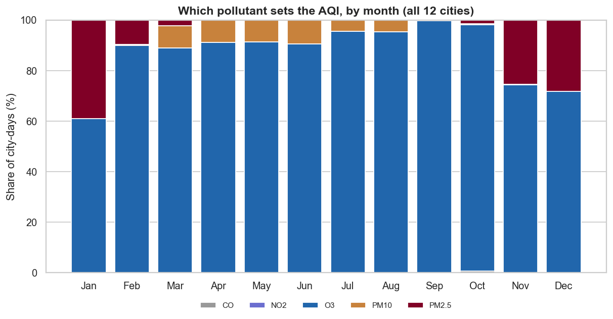
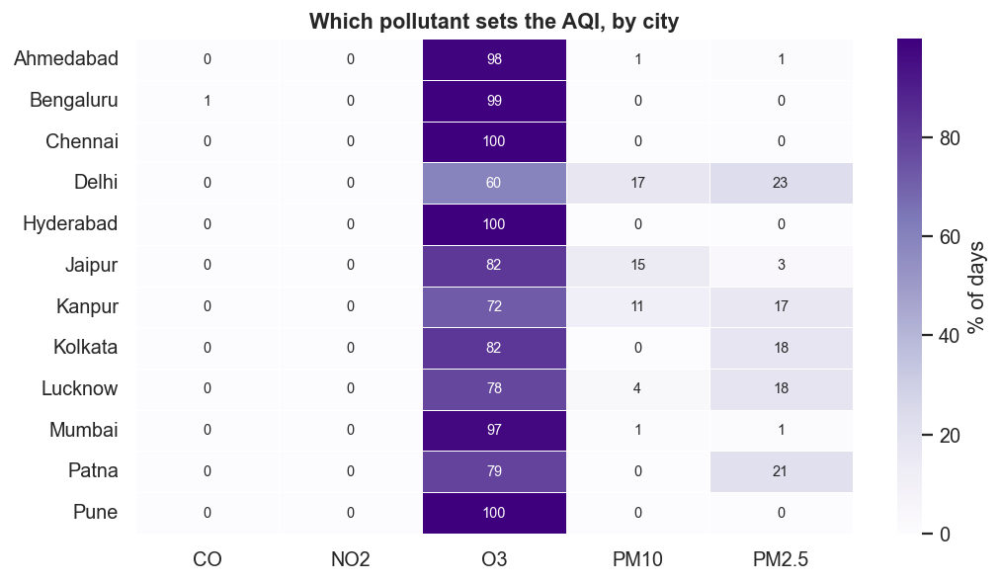
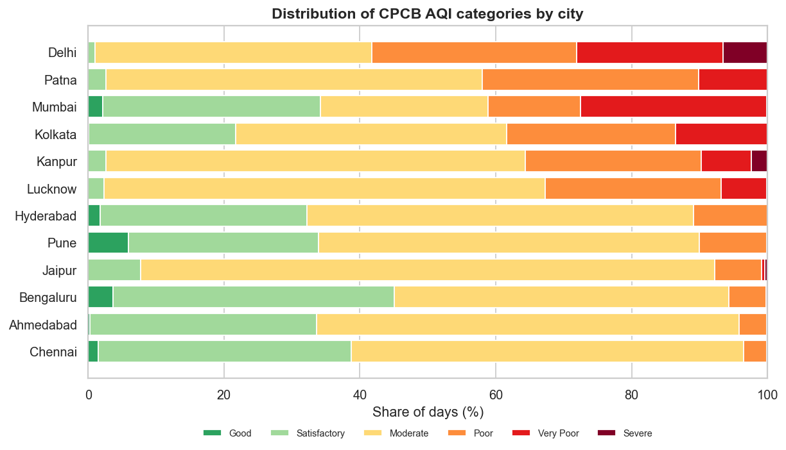
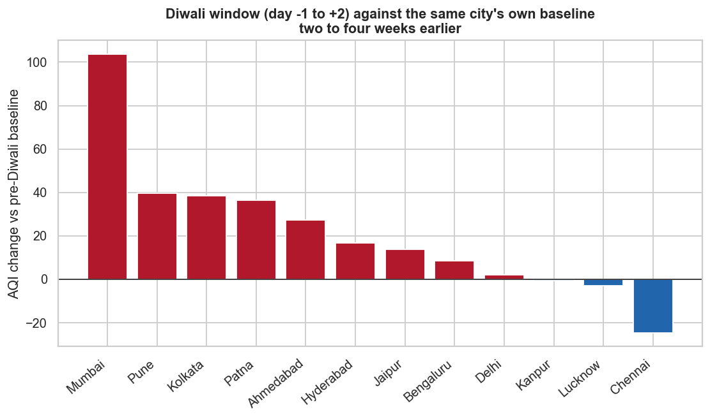

India Air Quality — CPCB National AQI
382,000 hourly pollutant readings turned into 15,936 city-days across 12 cities, with India's official CPCB AQI implemented from the specification rather than taken pre-calculated. Because AQI is the maximum of pollutant sub-indices, the pollutant that sets it rotates through the year — which changes which interventions could move the index at all.
The brief
Which interventions could actually move India's air quality index?
Air quality reporting in India is dominated by two narratives: winter smog and stubble burning. Both are about particulates. This project asked whether the data supports the framing — and found that the answer depends entirely on a property of the AQI formula that most analyses skip past.
The CPCB National AQI is the maximum of pollutant sub-indices, not their average. So the question is never "how polluted is the air today" — it is "which pollutant is worst today". An intervention aimed at a pollutant that is not currently setting the index cannot move the index at all, no matter how well it works.
Method
The AQI is computed here, not imported
Rather than consuming a pre-calculated index, each pollutant gets a sub-index by piecewise linear interpolation between the published CPCB breakpoints, and the day's AQI is the maximum across pollutants. Averaging windows follow the specification exactly:
| Pollutant | Averaging window |
|---|---|
| PM2.5, PM10, NO₂, SO₂ | 24-hour mean |
| O₃, CO | 8-hour rolling maximum |
| Stage | Script | Output |
|---|---|---|
| Ingest | src/extract.py | Hourly readings, 12 cities, one CSV each |
| AQI | src/aqi.py | CPCB sub-index and AQI implementation |
| Clean | src/transform.py | Daily city panel + data quality report |
| Analyse | src/analysis.py | 7 figures + findings report |
| SQL | src/load_db.py | SQLite database + 8 analysis queries |
| Dashboard | dashboard/app.py | Streamlit app, 6 tabs |
Source is the Open-Meteo Air Quality API (Copernicus CAMS reanalysis). 20 tests pin the sub-index breakpoints and averaging windows, because a silent error in the AQI function would invalidate every downstream number without ever throwing.
The dashboard
A six-tab Streamlit app over the daily panel, with city, zone and date filters that drive every view:


Findings
1 The gap between cities is enormous

| City | Zone | Mean AQI | Worst | Safe days |
|---|---|---|---|---|
| Delhi | Indo-Gangetic Plain | 237.4 | 488 | 1.1% |
| Patna | Indo-Gangetic Plain | 201.1 | 386 | 2.6% |
| Kanpur | Indo-Gangetic Plain | 196.7 | 470 | 2.6% |
| Lucknow | Indo-Gangetic Plain | 189.4 | 412 | 2.3% |
| Mumbai | Coastal | 182.9 | 405 | 34.2% |
| Kolkata | Indo-Gangetic Plain | 182.6 | 397 | 21.8% |
| Jaipur | Semi-arid | 153.5 | 416 | 7.8% |
| Hyderabad | Deccan Plateau | 137.0 | 285 | 32.2% |
| Pune | Deccan Plateau | 133.7 | 303 | 33.9% |
| Ahmedabad | Semi-arid | 126.2 | 305 | 33.6% |
| Chennai | Coastal | 119.2 | 303 | 38.7% |
| Bengaluru | Deccan Plateau | 117.1 | 302 | 45.1% |
Delhi averages 237 AQI, twice Bengaluru's 117. But the mean understates the difference — the health-relevant column is the last one. Delhi records safe air on 1.1% of days against Bengaluru's 45.1%, a 41-fold gap. Delhi also logs 87 days in the Severe band; six of the twelve cities log none at all.
2 Geography beats everything else

| Zone | Mean | Median | Max |
|---|---|---|---|
| Indo-Gangetic Plain | 201.5 | 187.0 | 488 |
| Coastal | 151.1 | 125.0 | 405 |
| Semi-arid | 139.9 | 141.5 | 416 |
| Deccan Plateau | 129.3 | 133.0 | 303 |
All four worst cities sit on the Indo-Gangetic Plain. It is walled by the Himalayas to the north, which blocks dispersal, and it suffers a winter temperature inversion that traps pollution near the ground. Coastal cities get a sea breeze the plain does not.
3 Summer is worse than post-monsoon

| Season | Mean AQI |
|---|---|
| Winter | 190.0 |
| Summer | 187.4 |
| Post-Monsoon | 177.7 |
| Monsoon | 122.1 |
Winter is worst, as expected — but summer is a close second at 187, higher than the post-monsoon period at 178. The public conversation about Indian air quality is almost entirely about winter smog and the October–November window, yet on this data the April-to-June air is worse than the air that gets the headlines.
The monsoon at 122 is the only genuinely clean stretch, 1.6× better than winter, because rain scavenges particulates out of the atmosphere. Finding 4 explains why summer ranks so high: it is a different pollutant.
4 The AQI-determining pollutant rotates through the year
This is the finding that reframes everything above. Share of city-days on which each pollutant sets the AQI, by month:

| Month | PM2.5 | PM10 | O₃ | Other |
|---|---|---|---|---|
| January | 39.0% | 0.0% | 60.9% | 0.1% |
| February | 9.7% | 0.4% | 89.9% | 0.0% |
| March | 2.4% | 8.7% | 88.9% | 0.0% |
| April | 0.1% | 8.7% | 91.2% | 0.0% |
| June | 0.1% | 9.4% | 90.4% | 0.1% |
| September | 0.0% | 0.3% | 99.7% | 0.0% |
| November | 25.6% | 0.1% | 74.4% | 0.0% |
| December | 28.3% | 0.0% | 71.7% | 0.0% |
- November to January — PM2.5. Crop residue smoke, biomass burning for heat, and an inversion that traps everything near the ground.
- March to June — ozone and PM10. Photochemical ozone forms when sunlight acts on NOx and volatile organics, so it peaks with heat and daylight. Pre-monsoon dust storms lift PM10 across the northwest.
- July to October — ozone, on the overwhelming majority of days, once rain has washed the particulates out.
The ozone share here is high — it sets the index on the majority of city-days in nine months of the year, and ground-station CPCB reporting attributes far more days to PM2.5 than this. Two readings are possible and this dataset cannot separate them:
1. The reanalysis overstates ozone, or the CPCB 8-hour ozone breakpoints (100 µg/m³ for the Satisfactory ceiling) are easily crossed in a sunny climate, inflating the sub-index relative to what monitors record.
2. Ground monitor networks under-sample ozone. India's monitoring estate is weighted towards particulates, so ozone-dominated days may genuinely be under-counted in official reporting.
Validating against CPCB station data is the obvious next step. Until then the honest claim is narrow: in this reanalysis, ozone sets the index far more often than the public conversation implies. The seasonal rotation is robust either way — PM2.5 clearly takes over in November–January and clearly does not in April–June.
5 The PM2.5 problem is regional; the ozone problem is national
Share of days on which each pollutant is the AQI-determining one, by city:

| City | PM2.5 | PM10 | O₃ |
|---|---|---|---|
| Delhi | 22.8% | 17.2% | 59.7% |
| Patna | 20.9% | 0.1% | 79.0% |
| Lucknow | 18.4% | 3.9% | 77.7% |
| Kolkata | 17.7% | 0.0% | 82.3% |
| Kanpur | 16.6% | 11.4% | 72.1% |
| Jaipur | 3.2% | 14.7% | 82.2% |
| Mumbai | 1.2% | 1.4% | 97.4% |
| Ahmedabad | 1.1% | 0.7% | 98.3% |
| Pune | 0.5% | 0.0% | 99.5% |
| Hyderabad | 0.3% | 0.0% | 99.6% |
| Chennai | 0.2% | 0.0% | 99.8% |
| Bengaluru | 0.0% | 0.0% | 99.2% |

The split is sharp and follows the same geography as finding 2. PM2.5 sets the index on a meaningful share of days only in the Indo-Gangetic Plain. In the south and on the Deccan it is effectively never the binding pollutant.
An intervention aimed at the wrong pollutant cannot move the index. Bengaluru could eliminate its particulate emissions entirely and its AQI would barely change, because PM2.5 was setting the index on none of its days. Delhi is the only city in this sample where particulate control would move the index on more than a fifth of days.
Read alongside the ozone caveat above: the exact ozone share depends on the reanalysis being right about ozone. The regional contrast in PM2.5 dominance does not — that pattern holds regardless of where the ozone level sits.
The stubble-burning trap
Where the analysis had to stop short of the obvious conclusion
Comparing 15 October – 30 November against the rest of the year, by zone. The result is the opposite of what the popular framing predicts:
| Zone | Stubble window | Rest of year | Difference | % increase |
|---|---|---|---|---|
| Coastal | 202.8 | 144.9 | +57.9 | +39.9% |
| Semi-arid | 164.0 | 137.0 | +27.0 | +19.7% |
| Indo-Gangetic Plain | 216.5 | 199.7 | +16.9 | +8.5% |
| Deccan Plateau | 133.0 | 128.8 | +4.1 | +3.2% |
The Indo-Gangetic Plain shows the smallest relative rise while coastal cities show the largest — even though stubble burning happens in Punjab and Haryana, upwind of the plain, and not near the coast at all.
Two things explain this, and neither is that burning does not matter:
- A ceiling effect. The plain already averages 200 AQI for the rest of the year, so it has less headroom to rise in percentage terms — and it still records the highest absolute level during the window of any zone, at 216.5.
- The window is not a burning variable. 15 October – 30 November is also the post-monsoon transition everywhere in India: rain stops scavenging particulates, temperatures fall, winds weaken. Every zone rises in this window because the weather changes in every zone.
It shows that air quality deteriorates nationally in this window and that the plain stays worst in absolute terms throughout. It cannot attribute any part of that to stubble burning, because the calendar window conflates burning with the seasonal weather shift.
Separating them needs satellite fire counts and wind-direction data — neither is in this dataset. Reporting the plain's 8.5% as evidence of a burning effect, or the coast's 39.9% as evidence against one, would both be wrong.
Diwali: the comparison design changes the answer
Two designs were run on the same question, and they disagree:
| Comparison | Mean effect |
|---|---|
| Diwali window vs the city's annual mean | +12.4 AQI |
| Diwali window vs the city's own pre-Diwali baseline | +21.5 AQI |

The own-baseline design gives the larger estimate, which is the opposite of what one might expect. The reason is that the annual mean already contains the November-to-January winter peak, so it is a high bar to clear. The two-to-four-weeks-before window falls in the cleaner October shoulder period, so the jump measured against it is bigger.
Which number is right? The own-baseline design is the better one — it controls for city-specific and year-specific levels and compares against a period days away rather than months. But it does not control for the seasonal deterioration already under way through October and November. The +21.5 figure therefore contains both the firework effect and several weeks of ordinary seasonal worsening, and should be read as an upper bound rather than a clean estimate.
Isolating the firework contribution properly needs a same-day-of-season control — comparing against the equivalent calendar window in years when Diwali fell elsewhere. With four Diwali dates in the data, that design is not yet powered.
The SQL layer
8 queries over a SQLite build of the daily city panel
The rotation in finding 4 is a conditional-aggregation query — counting, per month, the share of city-days on which each pollutant came out highest:
-- Q4. Which pollutant sets the index, by month -- Shows the seasonal rotation between particulates and ozone. SELECT month, month_name, ROUND(100.0 * SUM(CASE WHEN dominant_pollutant = 'PM2.5' THEN 1 ELSE 0 END) / COUNT(*), 1) AS pct_pm25, ROUND(100.0 * SUM(CASE WHEN dominant_pollutant = 'PM10' THEN 1 ELSE 0 END) / COUNT(*), 1) AS pct_pm10, ROUND(100.0 * SUM(CASE WHEN dominant_pollutant = 'O3' THEN 1 ELSE 0 END) / COUNT(*), 1) AS pct_ozone FROM daily_aqi WHERE dominant_pollutant IS NOT NULL GROUP BY month, month_name ORDER BY month;
The Diwali comparison is the query where the design decision lives. Both windows are built in the same CASE pass so each city-year is measured against its own baseline rather than against a pooled average:
-- Q6. Diwali window against each city's own pre-Diwali baseline -- A naive comparison against the annual mean would overstate the effect, -- because Diwali sits inside a period when air quality is already worsening. WITH windows AS ( SELECT city, year, AVG(CASE WHEN days_from_diwali BETWEEN -1 AND 2 THEN aqi END) AS diwali_aqi, AVG(CASE WHEN days_from_diwali BETWEEN -28 AND -14 THEN aqi END) AS baseline_aqi FROM daily_aqi WHERE aqi IS NOT NULL GROUP BY city, year ) SELECT city, year, ROUND(diwali_aqi, 1) AS diwali_window_aqi, ROUND(baseline_aqi, 1) AS baseline_aqi, ROUND(diwali_aqi - baseline_aqi, 1) AS difference FROM windows WHERE diwali_aqi IS NOT NULL AND baseline_aqi IS NOT NULL ORDER BY difference DESC;
The comment above the query is doing real work: it records why the baseline window was chosen, so the +21.5 figure is not later mistaken for a clean firework estimate.
Delhi's trend line uses an explicit window frame rather than a self-join:
-- Q5. 30-day rolling average AQI for Delhi SELECT date, aqi, ROUND( AVG(aqi) OVER ( ORDER BY date ROWS BETWEEN 29 PRECEDING AND CURRENT ROW ), 1 ) AS rolling_30d_aqi FROM daily_aqi WHERE city = 'Delhi' AND aqi IS NOT NULL ORDER BY date;
Recommendations
What follows from this
- Match the intervention to the binding pollutant, city by city. Construction bans, vehicle restrictions and firecracker rules all target particulates. In Bengaluru, Chennai, Pune and Hyderabad, PM2.5 sets the index on under 1% of days — those measures cannot move the number there.
- Take summer ozone seriously. A city that eliminated its particulate problem entirely would still record poor air through April to June, on this data. Ozone control is a different policy area — NOx and volatile organic compounds — and it is currently absent from the conversation.
- Report the share of safe days, not the mean AQI. Delhi's mean of 237 and Mumbai's 183 look like a difference of degree. 1.1% safe days against 34.2% is the same comparison, and it is the one that describes what living there is like.
- Validate the ozone share against CPCB station data before acting on it. It is the one number in this project that could plausibly be a model artifact, and it is flagged as such rather than buried.
Limitations
- Modelled, not measured. CAMS reanalysis assimilates satellite and ground data into an atmospheric model. It is consistent across cities in a way ground monitors are not, but it will not reproduce a specific CPCB station reading on a specific day.
- One grid cell per city, so intra-city variation is invisible. Delhi is not one air quality environment.
- Under four years of data. Enough for seasonality, not enough for trend claims. Nothing here says whether Indian air is getting better or worse.
- Every result is correlational. Nothing in this dataset establishes a cause — the stubble window section is the worked example of why that matters.